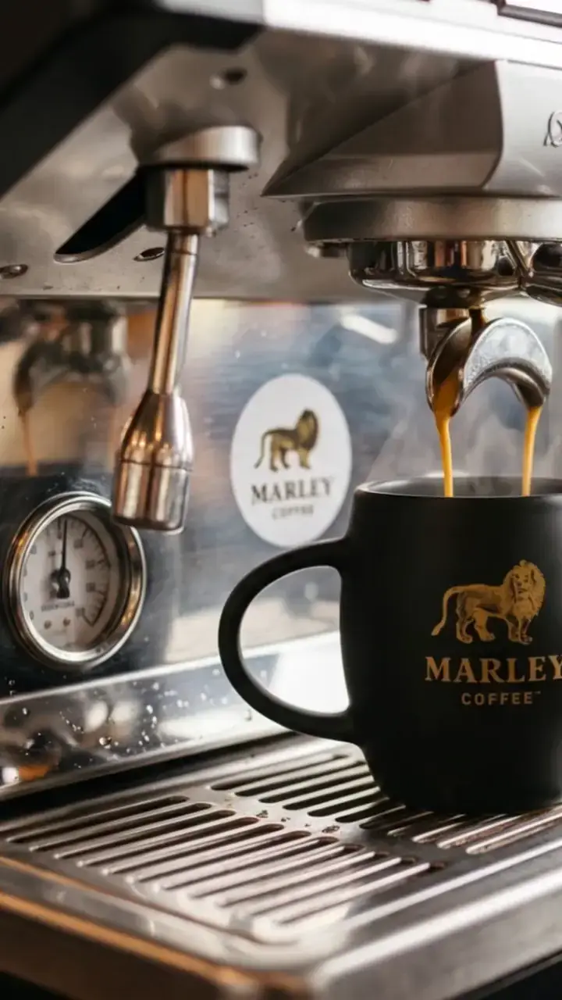

Marley Coffee · EmpresasOficio a la vista · 01/06
Empresas
Antes de elegir máquina,
cuenta tus
Tazas

Con ese número se ordena todo:
máquina, café y reposición.
Desliza →

Marley Coffee · EmpresasOficio a la vista · 02/06
Empresas
El total del día
no muestra el
Anota a qué horas se juntan las tazas:
ahí se decide la máquina.
Ritmo
Desliza →
Marley Coffee · EmpresasCuentas claras · 03/06
Empresas
Ejemplo de un día
de servicio
80
Tazas
al día
- Mañana
- 45 tazas
- Tarde
- 35 tazas
- Café al mes · 26 días · 9 g
- 18,7 kg
Valores de ejemplo. Tu consumo real se confirma en tu propuesta.
Desliza →